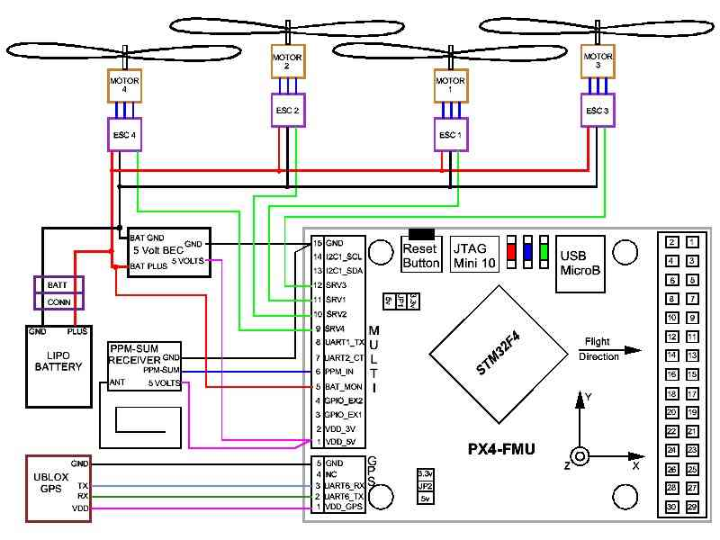
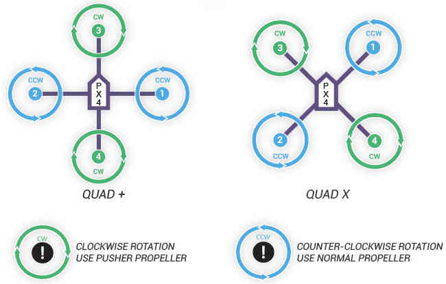
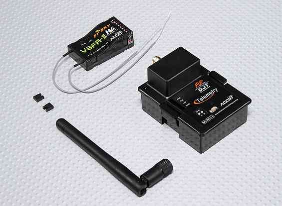

Archived: Installing the PX4FMU on a QuadCopter¶
Warning
ARCHIVED ARTICLE
This article is for creating a quadcopter using the PX4FMU only, which is one approach for creating a very small autopilot. Arsovtech have created a small Pixhawk based board that is much more popular with the community.
Overview¶
Bill Of Materials:
Copter firmware version 3.1 and later supports only the combined system of the PX4 FMU and PX4 IO board; the FMU-only system is no longer supported. Purchase a PX4 FMU kit from 3DRobotics LINK_BROKEN and a PX4 I/O board LINK_BROKEN
A special cable that fits into the PX4’s main “Multi” connector will allow you to perform the primary wiring and it is available from 3DRobotics LINK_BROKEN
If you choose, you can cut off the single pin connectors and solder directly to the necessary locations and trim back the excess wires.
Use the 4 supplied nylon standoffs to mount the PX4FMU to a piece of scrap plastic or fiberglass sheet the same size as the FMU.
Mount the board to your copter with four 3/4” squares of Kyosho Zeal gel or double sided foam tape to provide vibration isolation.
Mount your PX4-FMU board in a central location on top of your QuadCopter.
The PX4FMU board Normally has the SD card on top.
It can sometimes be advantageous to mount the PX4FMU with the other side up for better LED observation.
If you do mount the PX4FMU board with the Component side up it will be necessary to set the “Board Orientation (AHRS_ORIENTATION)” parameter to “Roll 180” in the Advanced Parameter List in Mission Planner.
The arrow labeled “FRONT” should be facing to the front of the aircraft (also the large black board interconnect connector).
If you use the vibration dampers suggested above it is best to put a small O-ring on top of the damper and under the PX4 Board before fastening it “gently” down with the supplied nuts to prevent damage to the board.
In fact, these dampers may not provide adequate damping and you should review the Wiki section on vibration control.
Mount the GPS facing up with an unobstructed “view” of the sky.
The GPS can be mounted on a short riser to give it the widest satellite access.
PX4-FMU Only Wiring Diagram for QuadCopters using a PPM-SUM receiver¶

Wiring the PX4FMU Board to Your QuadCopter¶
Use heavy gauge wire to interconnect the ESC’s Ground and power leads to a Battery Connector.
A Power Distribution board can also be used.
Connect your BEC (5 volt power supply) power in leads to the battery input leads.
Connect the BEC Ground output to the PX4’s Ground (Multi connector pin 15).
Connect the BEC Power output to the PX4’s power In (Multi connector pin 1).
NOTE! Instead of a separate BEC as shown, the power and ground leads (signal side) from one of your ESCs that contains a BEC can be wired to the Multi connectors pins 1 and 15 to provide PX4 board power.
The PPM-SUM receiver may be wired with a connecting cable as shown in the diagram above.
Or the PPM-SUM signal and power and ground leads from the 15 pin DF13 “Multi” connector may be directly wired to a 3 pin servo/receiver connector.
Connect your PPM-Sum RC receivers signal wire to pin 6 of the Multi connector on the PX4 board.
Connect the PPM-SUM RC Receivers Ground lead to pin 15 of the Multi connector on the PX4 board.
Connect the PPM-SUM RC Receivers Power lead to pin 1 of the Multi connector on the PX4 board.
Wire the PX4FMU board’s 4 servo out signals to the ESC control inputs.
The wires can be put together with connectors as shown in the diagram or solder and heat shrink tubing can be used.
Wire PX4FMU PWM control 4 (Multi Connector pin 9) to The ESC signal in for Motor 4.
Wire PX4FMU PWM control 2 (Multi Connector pin 10) to The ESC signal in for Motor 2.
Wire PX4FMU PWM control 1 (Multi Connector pin 11) to The ESC signal in for Motor 1.
Wire PX4FMU PWM control 3 (Multi Connector pin 12) to The ESC signal in for Motor 3.
Run a wire from the PX4FMU’s Battery Monitor connection (Multi Connector pin 5) to the positive battery power lead.
Note! The cable that is supplied in the plastic envelope with the UBLOX GPS which has white 6 pin connectors on both ends is NOT the correct cable for the PX4.
The correct longer cable is provided in a separate envelope and has a 5 pin “beige” connector on one end and a 6 pin white connector on the other end.
Plug the correct GPS cable’s white 6 pin connector into the 6 pin socket on the GPS.
Plug the beige 5 pin connector into the PX4’s 5 pin GPS socket which is next to the 15 pin DF13 Mini connector.
Plug the 2 pin connector attached to the lead supplied with the buzzer into the buzzer socket on the side of the PX4FMU board that has the SD card holder on it.
In Mission Planner in the Complete Parameter List it will be necessary for you to set the BRD_SAFETYENABLE parameter to 0 = off.
This is because the safety switch connects to the IO board’s on board microcontroller and there is no switch for the PX4FMU only.
PX4-FMU Only Wiring Schematic for QuadCopters using a PPM-SUM receiver¶
{kind=link}
Wiring your Motors for X or + mode configuration¶
{kind=link}
Using a Standard RC Radio Receiver with an 8 channel PPM Encoder¶
You can use a standard radio receiver with an 8 channel PPM Encoder in place of the PPM-SUM receiver.
An 8 Channel PPM Encoder is available from jDrones here.
Solder a 3x8 Right angle connector from the top into one end of the 8 Channel PPM Encoder board.
With the 3x8 connector up and facing away from you, solder a 3x1 Right angle connector on the right edge of the 8 Channel PPM Encoder board.
Connect 5-8 output channels of your receiver to the inputs of the 8 Channel Encoder (signal wire furthest from board) with 5-8 female to female servo jumpers.
Connect the PPM-SUM signal output of the Encoder to the PX4FMU boards PPM sum signal input (Pin 6 of the 15 pin Multi connector).
Connect the PPM-SUM ground input of the Encoder to the PX4FMU boards ground connection (Pin 1 of the 15 pin Multi connector).
Connect the PPM-SUM power input of the Encoder to the PX4FMU boards power connection (Pin 15 of the 15 pin Multi connector).
3DRobotics 8 Channel PPM-Sum Encoder¶

There are Several Radio systems that support PPM-Sum or S-Bus directly¶
{kind=link}
FRSky transmitter adapter module and PPM-Sum receiver¶

FRSky PPM-Sum compatible transmitter¶

{kind=link}